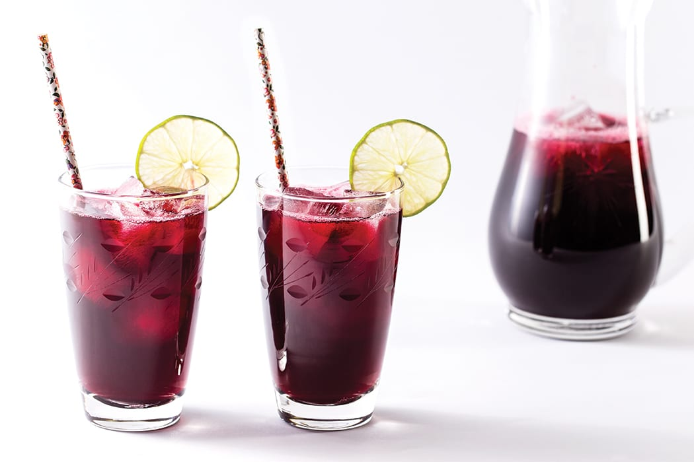

Drink guide Article
Ruth Ebube ChukwuHibiscus plant commonly referred to as Zobo drink is a popular nutritious healthy drink made in many home. Zobo is often used for medicinal purposes. Below is an highlight of some of the health benefit of this drink and why you should choose this drink over carbonated drinks: Zobo leaf drink manages high blood pressure, Zobo drink lower cholestrol, Zobo drink protects the liver because of its antioxidant properties, Zobo drink contains anti-cancer properties, Zobo drink is an anti-inflammatory and antibacterial agent, Zobo drink is an antidepressant agent, Zobo drinks helps to speed up the metabolism, and lastly, consuming zobo drink assist in enhancing kidney function.
The preparation of Zobo drink varies and it is one of the easiest healthy drink to make. Boil your dried Hibiscus leaf with pineapple, cucumber and clove. Sieve the drink after boiling. Add your soaked dart nut as sweetener, put in the fridge to chill. It is best served chilled.
Hibiscus Drink
The importance of taking Zobo drink cannot be over-emphasized. It is one of the cheapest drink to make and a far more healthier drink to take. It gives maximum satisfaction and it is not one of those bitter healthy herbs. If a drink would have so much health benefit as zobo, I think you should consider it more in your diet. Zobo is sweet and very nutritious!